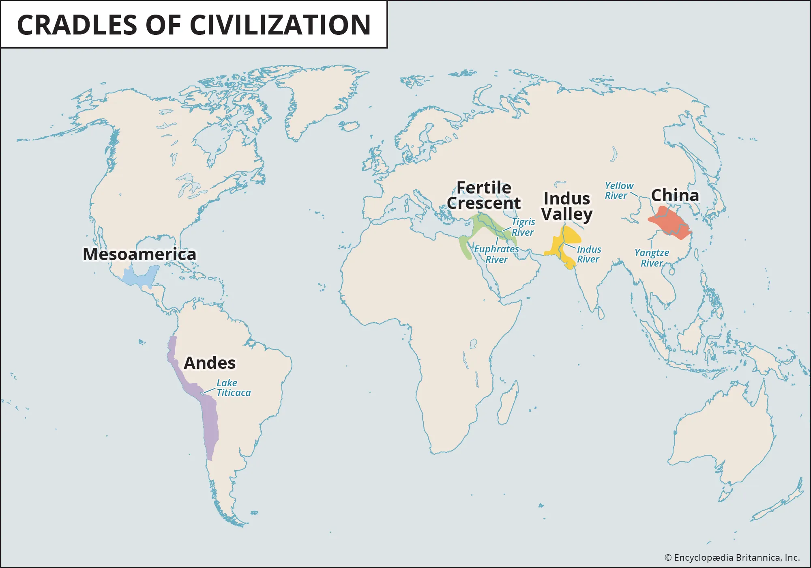
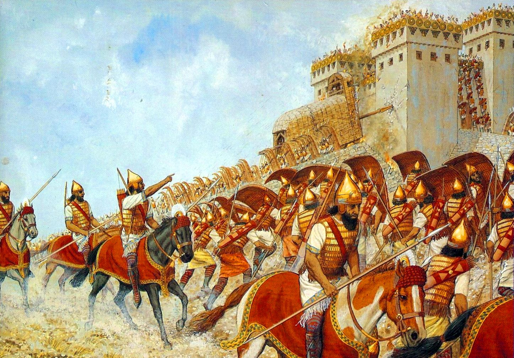
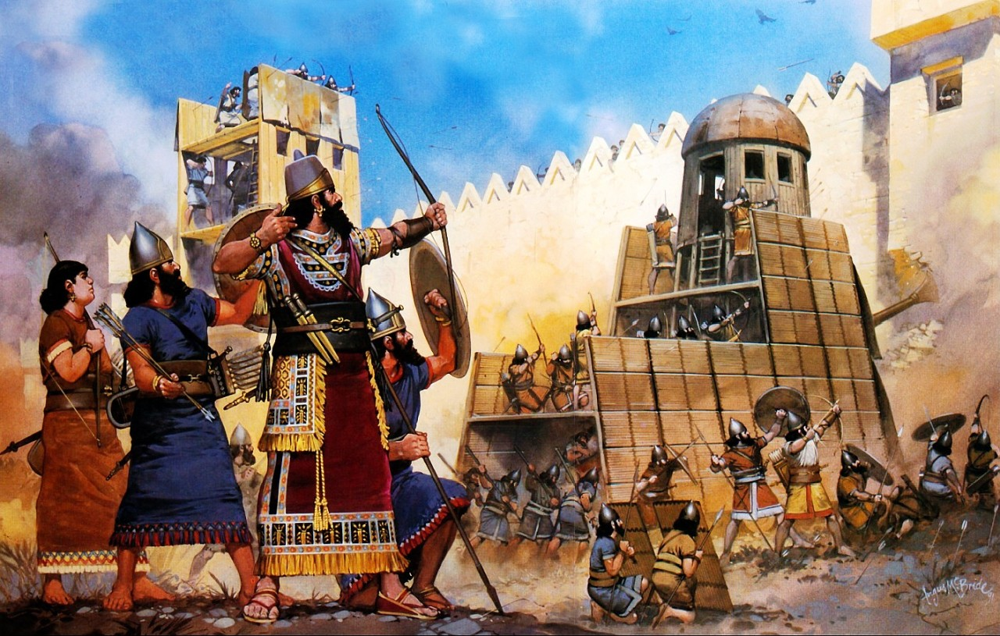

| The Cradles of Civilisation | Bronze Age | Iron Age | Classical Era |
|---|---|---|---|
| 4000-3000 BCE | 3000-1200 BCE | 1200-500 BCE | 500 BCE-500 AD |
|  The first advanced civilisations began emerging, linked to highfood surplus. This was namely in the Fertile Crescent, spanning from Mesopotamia (modern day Iraq) to Egypt, the Indus Valley (modern day Pakistan and India), the Yellow River Valley (modern day China) and in the Americas. These included the first cities, large metropolises with advanced architecture and structural management. Government, military, economy, science, maths and writing all emerged independently throughout all these civilisations, revolutionising how society works. Local hierarchies became even more dominant, with monarchs holding centralised power in various of these places. |
 The number of civilisations throughout the world increasedduring the Bronze Age, which saw the rise of bronze usage as opposed to stone or iron. Metallurgy development arose in multiple parts of the world leading to advanced weapons, tools, armour and artefacts. Trade networks became international during this time due to rapid manufacturing of items globally as well as rapid urbanisation. Bronze enabled durability in tools leading to efficient growth. The earliest empires first appeared during this period. |
 Following the Bronze Age collapse which led to instabilityand decline in the Mediterranean and West Asia, causes ranging from climate, invasions, internal rebellions, the Iron Age began. Due to trade routes being interrupted for tin acquirement, many societies shifted to Iron usage which was initially an inferior substitute, requiring far more complex technology but readily available. Over time this technology was refined to be more durable and effective than Bronze, with its abundance allowing it to be a far more versatile and efficient tool. This lead to greater weaponry, engineering, agriculture and architecture serving as a transformation period with reorganisation and societal rebirth. |
The Classical Era saw immense intellectual and cultural advancements all across the world. In the Greco-Roman world, democracy, anthropomorphic art, mathematics and philosophy became heavily influential and itself influenced by other further East civilisations like the mathematical, astronomical and literary advancements of South Asia, Persia, and China, interconnecting most major Eurasian civilisations mainly through the Silk Road trade network. Places outside of this sphere also saw this development through their complex urban centres, writing and astronomy such as in Pre Columbian America and Sub Saharan Africa. |